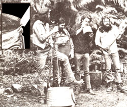

And that's what this column is all about. Down-home music that you can make ... and the instruments (which, in some cases, you can also make!) to play that music on.
We may also publish some songs, discuss music as a potential home business, run discographies, bibliographies, and/or include whatever other do-it-yourself music topics you'd like to see.
The important thing is that this is a new column. If you like it, write to me and let me know. If you have some ideas for this feature, let me know that. I'm open to any suggestions or information you care to contribute. I'll even try to answer your questions about down-home music ... but-both for the benefit of all MOTHER's readers and to ease my correspondence load-I'll deal with those questions, whenever possible, here in this column ... rather than in personal letters. address your correspondence for this column and this column only-to Marc Bristol, 31722 N.E. 180th Place, Duvall, Wash. 98019.
If you happen to be up in my neck of the woods this Memorial Day weekend, be sure to drop by Seattle, Washington and catch the Northwest Regional Folk-life Festival. This four-day musical extravaganza will feature fiddlers, folk singers, string bands, traditional Indian dancers, and more! I can just about guarantee that anyone who's able to attend will have a strummin' and pickin' whale of a time!
Of course, not many of you musicmakin' MOTHER readers are likely to be in my specific corner of the U.S. on that particular weekend ... but-then again-our Northwest get-together will hardly be this year's only musical gathering. Lucky for all of us, more than a thousand fine festivals will be held- all over North America-in '79. So the chances are good that at least one of these foot-stompin' hootenannies will be taking place just a guitar pick's throw away from you!
And, if you can locate a festival within range of your vehicle and budget, do make it a point to get there. Such shindigs will include everything from flat-picking championships to autoharp workshops, are generally held out in the fresh air, and often even feature "open microphone" times ... when anyone (and that might mean you) can get up and play a tune! Nine times out of ten, though, the planned activities-no matter how great they may be-end up taking a back seat to the spontaneous showside jam sessions that are typical of large musical "happenings".
OK, I've got you hooked, right? You're ready to polish up the washboard, clean out the blow notes of your harmonica, and go? But wait ... exactly where will that nearby jubilee be held?
Well, there are far too many festivals scheduled for me to list them all here. Besides, I'm writing this column in January. By the time you have a chance to read it (probably sometime in May) many of the get-togethers will have changed their dates, and other new shindigs?that weren't even planned at the beginning of the year-will have been organize d
So, what I will do is point you in the direction of a number of publications that do provide either regional, national, or "special interest" (usually relating to one instrument) festival listings.
NATIONAL COUNCIL FOR THE TRADITIONAL ARTS (1346 Connecticut Avenue, Room 1118, Washington, D.C. 20036). For the past five years, these folks have published a definitive $315 listing of over 1,200 festivals. This year, however, they have-at least temporarily-abandoned this project. That's why I put the NCTA (formerly the National Folk Festival Association) at the very top of my list ... because I want your help- in the form of written requests- in persuading them to start printing that excellent schedule of festivals again!
Another person you might contact?with that same couldn't-you-resume-the. calendar suggestion-is Joe Hickerson (Library of Congress, Folk Music Division, Washington, D.C. 20559). Joe's organization handled the chore of compiling a national listing before that job passed over to NCTA, and perhaps a few thousand nudges in the right direction would convince him that the Library of Congress should, once more, prepare an authoritative festival inventory. (Of course, Mr. Hickerson is also a good source of lists of folk music magazines, musical societies, record companies, and other materials related to traditional tunemaking.)
There are also a good number of music magazines that still do cover the festival field. The first three try to blanket the entire nation's ''hootenanny" scene.
BLUEGRASS UNLIMITED (Dept. TMEN, Box 111, Broad Run, Virginia 22014). This 48-page monthly ($8.00 a year) publishes a LES. and Canada Festival Guide Issue every April ($1.00) that ING all the get-togethers they know about The mag also features festival updates and interviews with prominent folks like Bill Monroe, Doe Watson, and Jimmy Martin ... as well as all sorts of articles about the songs, people, and instruments of bluegrass music.
SING OUT! (Dept. TMEN, 270 Lafayette Street, New York, New York 10012) is probably the grandpappy of the folk music magazine world ... heck, even Woody Guthrie used to write for them. The 48-page bi-monthly ($8.50 a year) runs a festival list each spring-besides dealing with everything from instruments to records-and publishes some new and old musical numbers each issue. Sing Out! definitely deserves the support of all you folk song fans.
PICKIN' MAGAZINE (Dept. TMEN, 401 North Broad Street, Philadelphia, Pennsylvania 19108) is sort of like Bluegrass Unlimited, butin addition to old-time country and bluegrass-Pickin'deals with folk, jazz, and other "specialty" music and festivals. The 74-96 page monthly ($12 a year) covers a wide range of subjects: the music scene overseas, instrument repair and building, tablature, and record reviews.
A good number of music mags are re gional in scope, so one way to get the latest festival information is to find a publication that lists the "plucking parties" in your locale ... such as one of the following:
NEW YORK PINEWOODS FOLK MUSIC CLUB NEWSLETTER (Dept. TMEN, 199-16 Hillside Avenue, No. 1B, Hollis, New York 11423). This monthly folk paper ($6.00 a year) covers the festivals and concerts of the Northeast and New England.
SOUTHERN LIVING (Dept. TMEN, 820 Shades Creek Parkway, Birmingham, Alabama 35209)-a slick, 200-pluspage monthly that costs $12 for a one year subscription-is not a music magazine, but each issue does contain an upcoming events section. Besides listing music festivals, Southern Living notes regional arts and crafts fairs (you can
often get play-for-tips street gigs or stage engagements at such goings-on). If you live in the South, you'll probably be able to find this helpful periodical at any good newsstand or library.
FRIENDS OF MOUNTAIN MUSIC (Dept. TMEN, 1509 Northwest 11th Street, Corvallis, Oregon 97330). This little 20-page monthly ($7.00 a year) covers the bluegrass and old-time country music scene up and down the Pacific coast and fills in the musical happening gaps we Westerners often notice in such eastern publications as Pickin' and Bluegrass Unlimited.
THE VICTORY MUSIC FOLK & JAZZ REVIEW (Dept. TMEN, Victory Music, P.O. Box 36, Tillicurn Branch, Tacoma, Washington 98492). This other West Coast plucking publication zeroes in on festivals and concerts in the Puget Sound area. The 20-page monthly ($7.00 a year) also carries columns on jazz improvisation, guitar making, etc. Victory Music is-in my opinion, at least- especially valuable for As record reviews. I counted 33 album write-ups in just one issue ... and most of them concerned those good -but all too often unsungdiscs put out on small, independent labels.
If your regional festival hunting efforts don't pan out, you can attack the maze of "subject" periodicals that deal with specific instruments. These range from the $6.00-a-year Dulcimer Players News (Dept. TMEN, P.O. Box 157, Front Royal, Virginia 22630) to the five-bucks-a-subscription Resophonic Echoes (Dept. TMEN, RR 1, Madill, Oklahoma 73446). You'll find a thorough listing of such publications in the free catalog available from Elderly Instruments (Dept. TMEN, 514 East Grand River, East Lansing, Michigan 48823). Then you can send off for a magazine geared to your favorite musicmaker, and go from there. (By the way, you may recall that I praised Elderly Instruments a couple of columns ago ... in MOTHER NO. 55, page 136. Their fine catalog offers everything from kalimbas to Arhoolie Records.)
The last festival-finder I'll mention is a $6.75 volume-The Folk Music Sourcebook?which is available from Elderly or from the book's publisher: Alfred A. Knopf, Inc. (Dept. TMEN, 201 East 50th Street, New York, New York 10028).
Whoops! Make that the next-to-last shindig resource ... because I also want to tell you about the 1979 Songwriter's Market (Dept. TMEN, Writer's Digest Books, 9933 Alliance Road, Cincinnati, Ohio 45242). Actually, this fact packed hard-cover volume ($9.95) will only provide a limited amount of general festival information. Mostly, it'll answer those questions you may have-and that I am often asked-about copyrights, song publishing, and tune markets. The book also features straight-talk articles on how to-and how not to-get into song-writing on a professional basis.
Now suppose oust suppose) that you researched all these suggested materials-like a true festival musicologist and stilldidn't come up with a shindig in your stompin' grounds? If that's the case, don't give up . . . instead, start a music festival of your own! Out my way we hold our "Darrington Jam" on the second Sunday of each month ... a bunch of us pickers and tune smiths just assemble in a nearby school auditorium and "do it ourselves"!
Or you can take your cue from Dennis Howe. This enterprising MOTHER reader wrote me about an annual Fourth of July music gathering he single-handedly started out in Iowa. Dennis got on the bandwagon and drummed up donations of a roasting hog, kegs of beer, a public address system, portable toilets, a flatbed trailer performing stage, and more. Throw in the potluck supper he organized, too ... and you'll see that ol' Denny's ready to accommodate just about everyone in that entire corn-growing state! (If you want to show up at this year's July 4th Howian Hootenanny, write Dennis at Dallas Center, Iowa 50063).
I just learned that-if you send Tom Scribner (No. 228, St. George Hotel, Santa Cruz, California 95060) one of those self-addressed, stamped envelopes-you can get the latest on the Musical Saw Folk Festival he's getting together sometime in May or June down at Santa Cruz, California. (And, speaking of tuneful tools, I'd planned to interview the famous musical saw producer--C .J. Mussehl-for you, but he passed on to his reward last October. I do figure to corner his successor, Dan Wallace, though ... and feature him in one of my upcoming columns.)
Before I go, I want to thank my buddy Steve Sedberry-an East Coast singer/ songwriter-who really helped me get the information for this column together. Steve wants to do some corresponding with down-home music lovers, so here's the Cotton Stater's address: P.O. Box 11130, Birmingham, Alabama 35202.
See you at a festival!
EDITOR'S NOTE: In addition to all Marc's listings, you might want to know about the good people of the Virginia Folk Arts Society. If you send them a self-addressed, stamped, business sized envelope (include a dollar to help keep 'em, going), they'll mail you an information sheet covering 95 of the biggest bluegrass folk festivals from Vancouver, British Columbia to Myrtle Beach, South Carolina. Write for the list to Music Festival Schedule '79, Box 186, Fairfax, Virginia 22030.
These dedicated song lovers also maintain a 24hour Festival Hotline, so call 'em on (703) 5216431 for all sorts of shindigging information... from travel directions to local camping conditions.
|
 Marc Bristol and other Washington State grassroots musicians wail away an a gut-bucket, washboard, and jug (the axe is a gay) For Marc s original homegrown Mum,- column-which featured gutbucket, washboard, jug, kazoo, musical saw. and spoons ''makin"" and playin instructions?see MOTHER NO 50. Inset shows gutbucket ""notch and bevel ''details. |
|
|